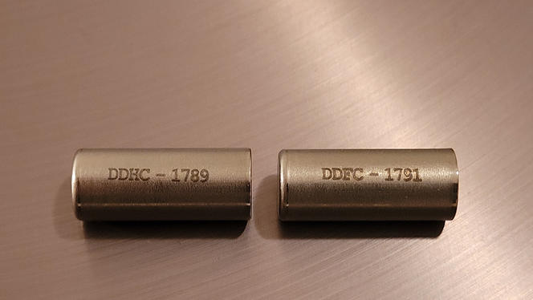
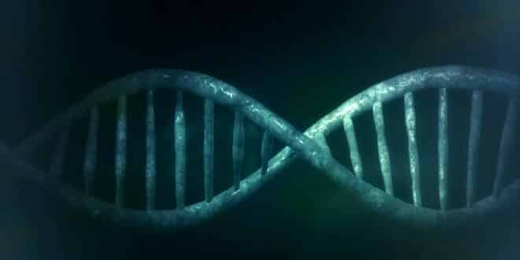

La veille Technologique est l’ensemble des moyens et des techniques mises en place afin de s’informer quotidiennement, journalièrement ou
hebdomadairement sur un sujet précis à l’aide d’outils de traitement de données et de recherches ciblées ou encore d’échanges. Ainsi la veille représente le fait de s’informer, de
traiter l’information et de la communiquer.
Pourquoi faire une veille
La veille technologique est un moyen de rester connecté/informé aux nouveautés, innovations, problèmes et diverses variations concernant un domaine précis.
Le but de celle-ci est d’être à jour tant sur les nouvelles technologies que sur les problématiques nouvelles (les failles de systèmes, ou bugs par exemple).
Ainsi la veille permet aux professionnels de s’informer et d’agir ou d’anticiper selon les informations du jour et donc de maintenir l’entreprise hors d’éventuelles
problèmes ou encore de tester les nouvelles innovations qui paraissent pertinentes dans un lab .
En résumé elle permet d’éviter de prendre des décisions sur des informations ou sur des technologies obsolètes
- Mettre en place des choses d’actualité ou pouvoir anticiper dans le travail
- Rester à jour
- Monter en compétence, découvrir des technologies et les tester sur machine virtuelle/ lab (ex
VMWare)
Méthodes de veille
La méthode push pull est une stratégie de collecte d’information qui mêle deux techniques complémentaires :
La méthode push :
Consiste à travailler de manière proactive c’est-à-dire d’utiliser des outils qui vont collecter des données sur un thème ciblé et qui va en sortir de cours résumés, c’est le cas d’un agrégateur de flux RSS comme Feedly. Cette méthode permet de suivre des sites choisis qui publient et alimentent notre flux d’information de manière régulière.
Ainsi au rythme choisi on peut consulter le résumé de ces pages et même aller sur le site pour approfondir l’article si il est attrayant.
La méthode pull :
Consiste à chercher activement des informations, en effectuant des recherches sur des moteurs de recherche ou en suivant des groupes de discussion. Cette méthode est dite pull car les informations sont tirées par l’utilisateur et demandes d’invertir du temps de recherche pour arriver à ces informations.
Avantages de combiner ces deux méthodes :
maximise quantité et la collecte d’information pertinente par jour
Gain de temps
Facilité de mise en place
Flexibilité
Ma veille
Les innovations sur l’archivage des données sur le long terme
L'archivage de données est une pratique qui consiste à stocker des données de manière à ce qu'elles soient accessibles et utilisables sur le long terme.
Cette pratique est essentielle pour les organisations et les entreprises qui doivent stocker des données sensibles, telles que le gouvernement, les institutions
académiques, les sociétés d'assurance, les entreprises pharmaceutiques et les entreprises qui traitent des données personnelles ou financières.
Les enjeux actuels de l'archivage de données sont nombreux et complexes.
L'un des principaux enjeux est la croissance exponentielle des données,
qui rend la gestion des archives de plus en plus difficile.
Les coûts de stockage sont également un enjeu important,
car le stockage de grandes quantités de données sur le long terme peut être très coûteux.
Fait le 10/12/2022 -- datavalue-consulting.com
l'évolution du stockage jusqu'alors
Les cartes perforées : Les cartes perforées sont une des premières méthodes de stockage de données informatiques. Elles remontent aux années 1800 et étaient utilisées pour stocker des données dans des machines à calculer
Les bandes magnétiques : Sont arrivées dans les années 1950, et présentaient une capacité de stockage supérieure aux cartes perforées. Elles étaient principalement utilisées pour stocker les données de backup.
Les disques durs : Arrivés dans les années 1960, représentent une avancée technologique dans ce domaine, introduits comme une solution plus rapide et plus fiable, leur principale utilisation était pour stocker les données des ordinateurs personnels et des serveurs
Les disquettes : Sont elles arrivées dans les années 1970, et présentent une méthode de stockage portable. Innovation de produit pour l’époque, malgré leur capacité limitée, la disquette permettra de créer ce que nous connaissons aujourd’hui. Leur principale utilisation était de transporter des données entre différents ordinateurs
Les CD-ROM : Apparu dans les années 1980, les CD-ROM on apporté une méthode de stockage plus robuste et de plus grande capacité que les disquettes, on les utilisaient principalement pour les jeux vidéo et aujourd’hui encore
Les clé USB : Arrivés dans les années 1990, elles représentent la méthode de stockage portable et pratique pour le stockage de données informatique, bien que limitées en espace de stockage elle représentent une réelle avancée et continue d’être utilisée aujourd’hui. Cependant une clé USB ne doit pas être utilisé comme stockage externe mais plus comme biais de transfert entre deux ordinateurs
les méthodes actuelles
Les disques SSD : arrivent dans les années 2000 et sont une alternative au HDD qui est plus rapide et plus fiable car ne présente aucune action mécanique dans son fonctionnement, c’est aussi moins fragile. Leur fonctionnement est basé sur des puces de mémoire flash et présentent une meilleure durée de vie.
Le cloud : arrivé en 2010, est aujourd’hui la technologie la plus récente et la plus démocratisée. Elle présente une flexibilité et une accessibilité accrue aux données à faible cout.
Les bandes magnétiques : Depuis 2020 les bandes magnétiques sont revenues avec une capacité de stockage augmentée permettant de stocker de grandes quantités de données à faible coût
aujourd'hui les solutions de stockage utilisées pour l'archivage sont
un mix entre le cloud et les bandes magnétiques. l'association des 2
méthodes permet d'avoir une sécurité face à la perte éventuelle de données
grâce à la redondance.
les problématiqus actuelles
Avec l’accélération de la transformation du numérique dans tous les secteurs, les entreprises ont migré vers des technologies de stockage à distance comme le cloud, entrainant une quantité de données massive à stocker.
Aujourd’hui les problématique des entreprises concernant le stockage sont :
La quantité de données
Les coûts
La compatibilité des technologies
La sécurité des données
La durabilité de la solution de stockage
L’innovation comme réponse aux problématiques actuelles
Stockage de données sur ADN,DNA drive project
Un projet de Stéphane Lemaire et Pierre Crozet de la startup Biomemory, spécialistes de biologie moléculaire au laboratoire de biologie computationnelle et quantitative
Face à la quantité de données produite aujourd’hui les méthodes de stockage actuelles des entreprises ne suffisent plus.
Afin de stocker ces données en masse et pouvoir les conserver plus longtemps il faut se tourner vers des innovations comme le stockage par ADN.
Mais en quoi consiste cette technique ?
Il s’agit d’encoder des données numériques
directement sur de l’ADN (c’est-à-dire de l’acide désoxyribonucléique),
avant de le synthétiser et de le placer dans un petit tube de quelques
centimètres à peine.

Cette technologie est arrivée le 23 novembre 2022 aux archives nationales sous la forme de deux capsules métalliques, contenant chacune 100
milliards de copies de la Déclaration des droits de l’homme et du citoyen de 1789, et la Déclaration des droits de la femme et de la citoyenne.
Ce sont les premières archives à être stockés de cette manière.
L’idée d’utiliser l’ADN comme support d’information numérique n’est pas récente, depuis 1959 le physicien américain Richard Feynman, avait déjà suggéré l’idée.
Mais ce n’est qu’en 2012 qu’elle est exploitée.
L’ADN ayant 10 milliards de fois la densité d’un CD pour une durabilité de
plusieurs millions d’années, il permettrait de remplacer les énormes serveurs
par de minuscules petites boîtes qui demanderait que très peu de ressources énergétiques.
Le stockage sur ADN est prometteur, mais il n’est pas encore
abouti, notamment au niveau du coût et du temps de traitement beaucoup trop
élevés à l’heure actuelle.
L’ADN constituerait ainsi une solution envisagée et envisageable pour les données dites froides (environ 70 % des données générées chaque année),
rarement consultées mais néanmoins précieuses, comme les archives.
En effet bien qu’attractif cette méthode est loin d’être assez développée pour exploiter des données à chaud.
Les temps de lecture / écriture sont aujourd’hui encore trop importants
D’après le docteur Nick Goldman, directeur adjoint de la recherche au laboratoire
européen de biologie moléculaire, cette technologie commencera à être
accessible d’ici 2025 à 2030.
Catalog une entreprise américaine a déjà affirmé avoir encodé la version anglophone de Wikipédia au
sein d’un ADN artificiel (la durée de l'opération n'a pas été dévoilée.)
Microsoft se positionne sur cette
technologie en développant un système d’encodage sur ADN entièrement
automatisé.
 Comment ça fonctionne ?
ADN utilise quatre bases chimiques : l’adenine (A), la guanine (G), la cytosine (C) et la thymine (T).
la donnée numérique binaire (0 ou 1) est transformée en donnée quaternaire (les quatre nucléotides de l’ADN : A,T,C G où A=C=0 et T=G=1 pour un code à 1 bit/base).
La conversion des données est assurée par un algorithme permettant de générer des séquences ADN au format DNA Drive.
La séquence est ensuite stockée, comme dans le vivant, sur de longs fragments d’ADN en double hélice,
Les molécules d’ADN sont conçues pour être manipulables par des cellules, comme des bactéries, qui ont la possibilité de copier ou d’éditer l’information ainsi encodée.
Enfin, la lecture de l’information peut être effectuée, avec des séquenceurs d’ADN qui font la taille d’une clé USB
L’encodage prend plusieurs jours ; le décodage, plusieurs heures. Le DNA Drive se veut une solution de stockage écoresponsable : durable, écologique, et ultra-compacte, elle peut être conservée durant des millénaires dans des capsules métalliques à l’abri de l’eau, de l’air et de la lumière sans apport énergétique. L’objectif est que le DNA Drive soit viable et exploitable dans les data centers d’ici 2030.
Les molécules d’ADN comportent-elles un risque pour l’environnement ?
Les molécules d’ADN sont bio sécurisées, l'ADN est crypté afin de ne porter aucune information génétique potentiellement dangereuse pour l’être humain ou pour l’environnement. Il est extrait de la bactérie et stocké dans une capsule en acier inoxydable.
Chaque capsule peut contenir une quantité d'ADN correspondant à 5000 To de données numériques.
Fait le 17/01/2023 -- sciences.sorbonne-universite.fr
Microsoft un des pionniers
Dans une nouvelle étude publiée dans le journal ScienceAdvances, Microsoft annonce avoir accompli une découverte majeure en collaboration avec le MISL (Molecular Information Systems Laboratory) de l’Université de Washington.
Cet article annonce le premier système d’écriture de stockage ADN » nanoscale « (à l’échelle nanométrique). Il devrait permettre une densité d’écriture de 25×10^6 séquences par centimètre carré. Ce qui représente une densité mille fois supérieure aux précédents systèmes.
C’est une avancée importante, car il s’agit d’une condition pour atteindre la vitesse d’écriture minimale requise pour le stockage ADN.
Microsoft est l’un des principaux fournisseurs du Cloud Computing. Le stockage ADN pourrait leur permettre de profiter d’un avantage concurentiel énorme, grâce à sa densité, sa durabilité et sa robustesse.
l’ADN permet de stocker un exabyte de données par pouce au carré.
Avec les méthodes de stockage actuelles, il faudrait un million de cartouches de cassettes pour stocker les neufs zettabytes. Avec l’ADN, neuf zettabytes d’informations pourraient être stockés une surface comparable à celle d’un réfrigérateur.
Certains scientifiques estiment que tous les films créés depuis l’invention du cinéma pourraient tenir sur l’équivalent d’un morceau de sucre. la durabilité est un réel point fort. Les données stockées sur l’ADN peuvent être conservées des milliers d’années, alors qu’elles sont perdues en moins de 30 ans sur un HDD ou un SSD.
Fait le 20/01/2023 -- lebigdata.fr
Du verre nanostructuré pour une conservation illimitée
Des chercheurs de l’Université de Southampton sont en train
de développer un support de stockage de données miniaturisé composé d’une
nanostructure en verre.
Ce disque dur de quelques millimètres s’appelle « technologie 5D » qui est une technologie laser.
Lorsqu’il sera achevé, il pourra stocker 360 TB à température ambiante durant
des milliards d’années ! Un disque de verre de la taille d'un CD pourrait contenir j'usqu'a 500To de données.
Il résistera à toutes sortes de réactions chimiques
et à des températures atteignant jusqu’à 1000 degrés.
Elle consiste à utiliser un laser femtoseconde pour créer de minuscules puits contenant une structure de seulement 500 nanomètres sur 50 nanomètres. Le laser utilise un effet appelé « amélioration de la proximité de champ » (« near-field enhancement ») pour créer de minuscules lames nanométriques.
Comme ces structures présentent différentes caractéristiques physiques, selon leur orientation elles dédouble le rayon lumineux qui les traverse. On parle alors d’enregistrement en cinq dimensions (ou 5D).
Les chercheurs annoncent une vitesse d’écriture de 1 000 000 voxels par seconde (le voxel est l’équivalent 3D du pixel en 2D), soit environ 230 Ko/s. Cela représente plus de 100 pages de texte par seconde. Lors des tests, ils ont pu enregistrer 6 Go de données sur un échantillon de verre de silice de seulement 1 pouce.
Un autre test a consisté à écrire 5 Go de texte sur un disque de la taille d’un CD, avec une fiabilité proche de 100%. Les chercheurs estiment qu’avec les progrès en matière de densité, il sera possible d’écrire une quantité de 500 To de données sur le disque. Toutefois, l’opération devrait prendre environ 60 jours.
Stockage froid et très longue durée
On est loin des vitesses d’écriture des SSD les plus performantes, mais il s’agit en l’occurrence de stockage froid, d’archivage, destiné à conserver des données importantes sur une longue période.
Sur ce point, les chercheurs indiquent que le support de stockage pourrait rester lisible, tant qu’il n’est pas brisé, pendant plusieurs milliards d’années, 13,8 milliards pour être précis.
la récupération de données ?
Il est bien trop tôt pour en parler, tout comme la résistance du composant aux rayures et à une utilisation dans un environnement normal de travail. Il faudra donc encore patienter quelques années avant de pouvoir détailler des informations techniques sur ce sujet.
Un rubik’s cube en hydrogel pour augmenter la capacité de stockage de données
Sur le même modèle que les QR Codes qui encodent et stockent des
informations sur des surfaces pixelisées, des chercheurs américains et
chinois développent actuellement un système pour encoder les données,
cette fois-ci au sein de patterns de couleur disposés sur un cube en
hydrogel.
L’avantage est la capacité de stockage de données accrue puisque
le cube est en trois dimensions, contrairement au QR Code qui est une
surface plane en deux dimensions.
L’objet en question fonctionne comme un Rubik’s Cube, c’est-à-dire qu'on
déplace les patterns de couleurs à volonté pour encoder de nouvelles données.
Les chercheurs estiment qu’il existe environ 43*10^18 configurations de couleurs
possibles dans un Rubik’s Cube.
La technologie n’est pas
encore aboutie, mais gageons que d’ici quelques années, un Rubik’s Cube
trônera à côté de tous les ordinateurs, en lieu et place des disques durs
externes.
Fait le 12/02/2023 -- lemondeinformatique.fr